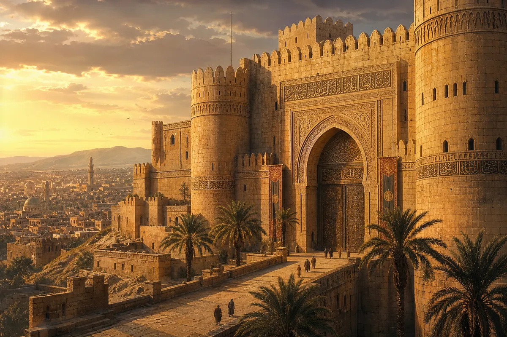
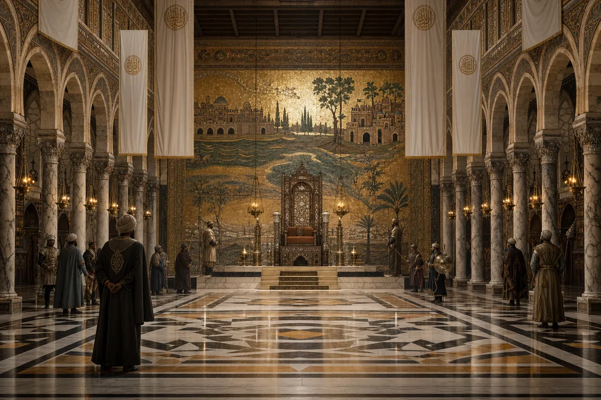
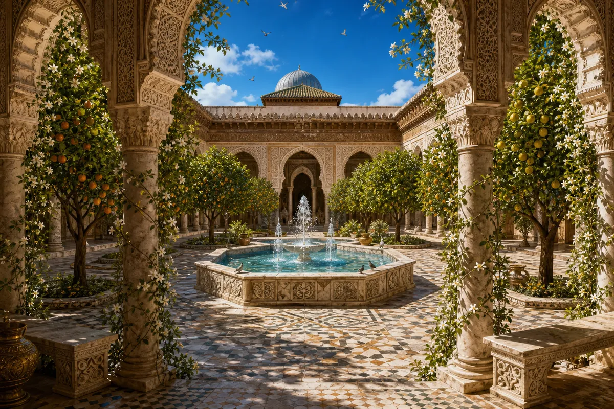
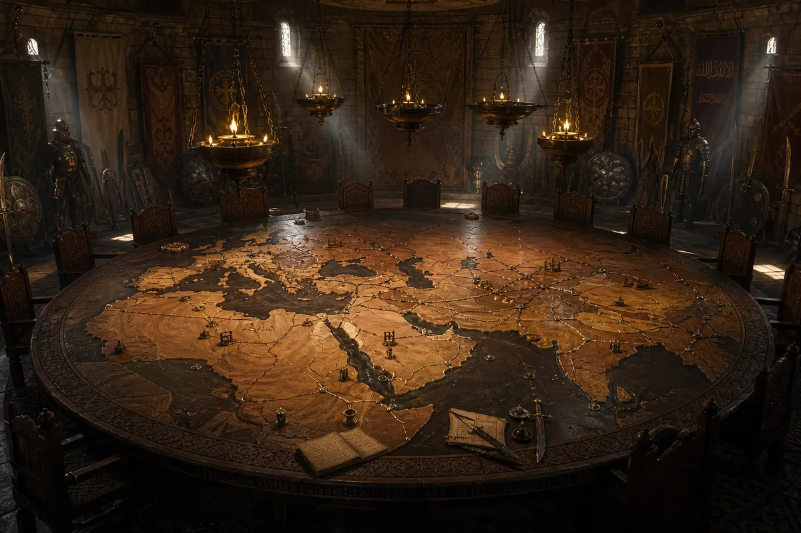
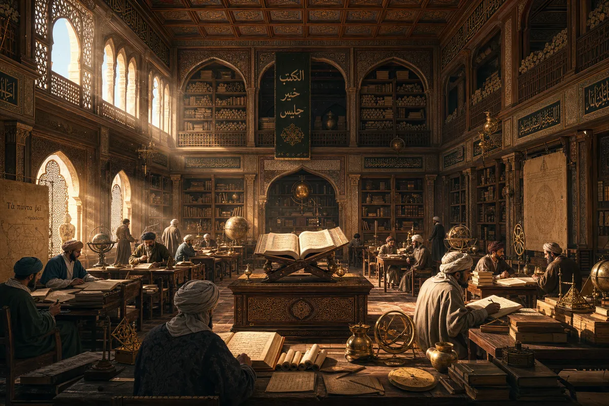
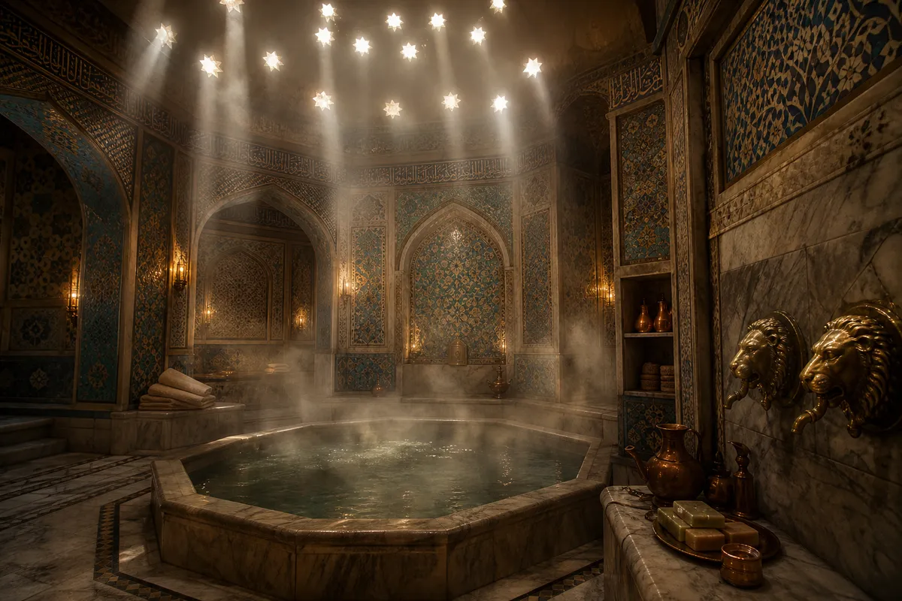

I. The Castle
The walls that held an empire from the Atlantic to the Indus

It does not look like the center of the world. That is because the center of the world does not need to announce itself. The golden limestone was quarried from the same hills that watched Abraham pass. The Roman foundations — because nothing in Damascus starts from scratch — hold Umayyad towers that hold the sky. Mu'awiya chose this hill not for defense. Defense is what you need when you are afraid. He chose it for the view. From here you can see the Barada River, the minarets, the orchards of Ghouta, and — if you squint with the right kind of ambition — Spain. The bronze gates have not been closed in forty years. There is nothing to close them against. Everything that matters is already inside.
"I do not sit on a throne. I sit on Damascus. Damascus sits on Rome. Rome sits on the bones of everyone who thought they were permanent. I do not think I am permanent. I think I am next."
— Mu'awiya ibn Abi Sufyan
II. The Throne Room
Byzantine mosaics for an Arab king — the world remade in glass and gold

The Byzantine craftsmen who made the mosaics were paid in gold and sent home alive. This surprised them. They had expected to be killed after — artisans who have seen the palace usually are. Mu'awiya said: why would I kill the men who proved that my enemies make beautiful things? The mosaic behind the throne shows rivers that flow into gardens that flow into cities that flow into paradise. There is no border between the earthly and the divine. That is the Umayyad thesis: heaven is not above. Heaven is what you build when you stop waiting for it. The throne itself is modest — carved walnut, ivory inlay, no jewels. The Caliph's power is not in the chair. It is in the fact that everyone in the room is standing.
"The throne is wood. The power is in the room. The room is stone. The power is in the city. The city is dust. The power is in the idea. Ideas do not sit."
— Walid ibn Abd al-Malik
III. The Courtyard Garden
Where the Caliph walks barefoot — because even God rested on the seventh day

The fountain was designed by a Persian engineer who wept when it worked. He had spent three years on the hydraulics and two minutes watching the water rise, and in those two minutes he understood that engineering is not about pipes — it is about the moment a child sees the water and laughs. The orange trees are grafted from Seville stock — the Umayyads brought them east when they lost the west. The jasmine was planted by a Caliph's wife whose name the historians forgot but whose garden the gardeners remember. The courtyard is the only place in the castle where no business is conducted. This is not a rule. It is an understanding. Even empire needs a place where the only sound is water.
"The fountain does not care who is Caliph. It was here before us. It will be here after. We are the ones who pass. The water stays."
IV. The War Council
From this table — Spain fell, Sindh was taken, Constantinople was besieged

The table is a map. The map is an empire. The empire stretches from the Atlantic coast where Tariq burned his boats to the Indus River where Muhammad bin Qasim planted the flag at seventeen. Every general who sat here left a mark in the wood — a knife scratch for each campaign. Some left many marks. Some left one. The captured banners on the walls are not trophies. They are receipts. The Byzantine eagle. The Visigothic cross. The Sassanid lion. Each one is a civilization that said "you cannot" and learned that the Umayyads do not hear that word. The oil lamps are kept low. Strategy does not need to be bright. It needs to be precise.
"Tariq burned the boats. I did not order him to. I would have. But he did not wait for the order. That is why he is Tariq and the mountain bears his name."
— Walid I, on the conquest of Al-Andalus
V. The Library
Greek, Persian, Indian, Roman — every empire's knowledge in one room

The Umayyads did not burn libraries. They read them. Greek philosophy arrived in camel-loads from Alexandria. Persian astronomy came with the engineers who built the irrigation. Indian mathematics — the zero, the numerals that Europe would later call "Arabic" — came through trade routes that moved numbers faster than silk. The scholars here do not translate word for word. They translate idea for idea. Aristotle in Arabic does not sound like Aristotle in Greek. He sounds better. He sounds like someone who has been waiting for a language that can hold him. The Quran sits at the center. Not because it is the only book. Because it is the book that said: Read. The first word. Before prayer. Before law. Read.
"The ink of the scholar is holier than the blood of the martyr. We have both. We prefer the ink."
VI. The Hammam
Where the Caliph is naked and equal to the steam

The star-shaped openings in the dome let in light but not eyes. Privacy here is sacred — more sacred than in the mosque, because in the mosque you are clothed in God's presence, but in the hammam you are clothed in nothing and the steam does not judge. The heated marble is veined with blue — lapis lazuli dust mixed into the stone by a craftsman who understood that luxury is not what you see but what you feel under bare skin. The water comes from the Barada, heated through Roman-era hypocausts that the Umayyads found, repaired, and improved. The lion-head fountains were cast by a coppersmith who made one mistake — the left lion smiles. Nobody has fixed it. The Caliph likes the asymmetry. Perfection is suspicious. A smiling lion is honest.
"In the hammam, I am not the Commander of the Faithful. I am a man with hot water and silence. These are the two things that no conquest can provide and no treasury can buy."